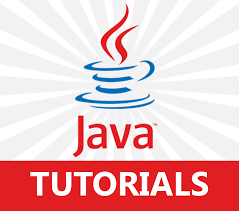

|  | ||
|
An exception is a problem that arises during the execution of a program. When an Exception occurs the normal flow of the program is disrupted and the program/application terminates abnormally. These exceptions are to be handled. There are so many causes which lead to exception like including programmer error, a user has entered invalid data, hardware failures, files that need to be opened cannot be found, resource exhaustion, a network connection has been lost in the middle of communications or the JVM has run out of memory etc. There are mainly two types of exceptions: checked and unchecked where error is considered as unchecked exception. The sun microsystem says there are three types of exceptions: 1. Checked Exception / Compile Time Exception 2. Unchecked Exception / Run Time Exception 3. Error Checked Exception / Compile time Exception : The Exceptions that are checked at Compilation Time by the Java Compiler is called Checked Exception or Compile time Exception. These exceptions cannot simply be ignored at the time of compilation, the Programmer should t ake care of (handle) these exceptions. Checked Exception force the programmer to catch them explicitly in try-catch block. List of checked exception • ClassNotFoundException Class not found. • CloneNotSupportedException Attempt to clone an object that does not implement theCloneable interface. • IllegalAccessException Access to a class is denied. • InstantiationException Attempt to create an object of an abstract class or interface. • InterruptedException One thread has been interrupted by another thread. • NoSuchFieldException A requested field does not exist. • NoSuchMethodException A requested method does not exist. Unchecked Exception / Runtime Exception : The Exceptions that are checked by JVM at runtime. Runtime exceptions are ignored at the time of compilation. The compiler does not check for such type of exceptions. Runtime Exceptions occur due to program bugs and include exceptions such as division by zero and invalid array indexing. List of unchecked exception • ArithmeticException Arithmetic error, such as divide-by-zero. • ArrayIndexOutOfBoundsException Array index is out-of-bounds. • ArrayStoreException Assignment to an array element of an incompatible type. • ClassCastException Invalid cast. • IllegalArgumentException Illegal argument used to invoke a method. • IllegalMonitorStateException Illegal monitor operation, such as waiting on an unlocked thread. • IllegalStateException Environment or application is in incorrect state. • IllegalThreadStateException Requested operation not compatible with current thread state. • IndexOutOfBoundsException Some type of index is out-of-bounds. • NegativeArraySizeException Array created with a negative size. • NullPointerException Invalid use of a null reference. • NumberFormatException Invalid conversion of a string to a numeric format. • SecurityException Attempt to violate security. • StringIndexOutOfBounds Attempt to index outside the bounds of a string. • UnsupportedOperationException An unsupported operation was encountered. * Difference between Error and Exception : Exception is an error which can be handled at runtime but Error is an error which can not handled. Exception is related to the application and Error is related to the environment in which the application is running. Exception can be Built-in or User Defined but Error is always Built-in. For Handling Exception we can use try, catch, throws keyword but not with Error. Exception can be checked or unchecked but Errors are always unchecked. In java, exception handling is done using five keywords. Throws A throws cause lists the types of exceptions that a method might throw. This is necessary for all exceptions, except those of type ERROR or Runtime Exception. All other Exceptions that a method can throw must be declared in the throws clause. If they are not, a compile-time error will result. throw We can throw an Exception explicitly, using ‘throw’ statement. throw keyword is used to throw exception to the runtime to handle it. finally finally block is optional and can be used only with try-catch block. Since exception halts the process of execution, we might have some resources open that will not get closed, so we can use finally block. finally block gets executed always, whether exception occurred or not. Catch Java catch block is used to handle the Exception. It must be used after the try block only. We can use multiple catch block with a single try. Try Java try block is used to enclose the code that might throw an exception. It must be used within the method. Java try block must be followed by either catch or finally block. Important points to Remember 1. We can’t have catch or finally clause without a try statement. 2. A try statement should have either catch block or finally block, it can have both blocks. 3. We can’t write any code between try-catch-finally block. 4. We can have multiple catch blocks with a single try statement. 5. try-catch blocks can be nested similar to if-else statements. 6. We can have only one finally block with a try-catch statement. 7. If we do not explicitly use the try-catch blocks in our program, java will provide a default exception handler, which will print the exception details on the terminal, whenever exception occurs. 8. Super class Throwable overrides toString() function, to display error message in form of string. 9. While using multiple catch block, always make sure that exception subclasses comes before any of their super classes. Else we will get compile time error. 10. In nested try catch, the inner try block, uses its own catch block as well as catch block of the outer try, if required. 11. Only the object of Throwable class or its subclasses can be thrown. 12. We can catch more than one Exception in a single catch block. 13. Chained Exception was added to Java in JDK 1.4. This feature allow us to relate one exception with another exception, i.e one exception describes cause of another exception. 14. Exception object will be garbage collected after Exception Handling. 15. The subclass exception should precede the base class exception when used within the catch clause. 16. The catch block throw the exception caught by itself this is called rethrowing of the exception by catch block. try { } Catch(Exception E){ throw RuntimeException(); // called rethrowing } 17. It is not considered as a good practice to write a single catch to catch all the exceptions because If we use the Superclass Exception in the catch block then we will not get the valuable information about each of the exception thrown during the execution, though we can find out the class of the exception occurred. Also it will reduce the readability of the code as the programmer will not understand what is the exact reason for putting the try-catch block. 18. All the exceptions inherit a method printStackTrace() from the Throwable class. This method prints the stack trace from where the exception occurred. It prints the most recently entered method first and continues down, printing the name of each method as it works its way down the call stack from the top. |
|
|